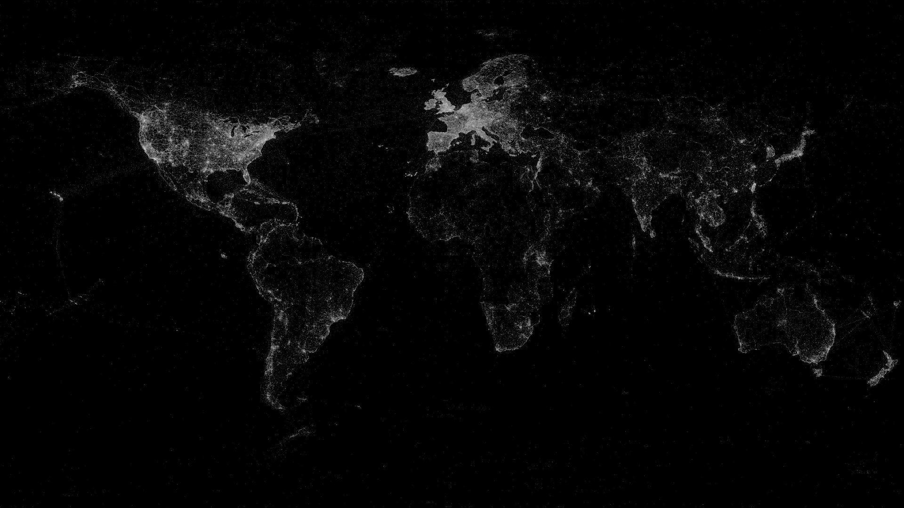

Primeri web karata
kreiranih za potrebe demonstriranja rada sa bibliotekom OpenLayers
u okviru master rada "Izrada Web kartografskog klijenta u React/OpenLayers okruženju"
01
Jednostavna web karta sa OSM
Primer jednostavne karte samo sa OSM lejerom.
Vidi kartu
02
Web karta sa OSM i WMS
Primer karte koja kao osnovni lejer ima OSM i WMS lejer preko njega.
Vidi kartu